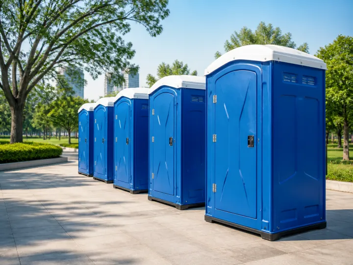
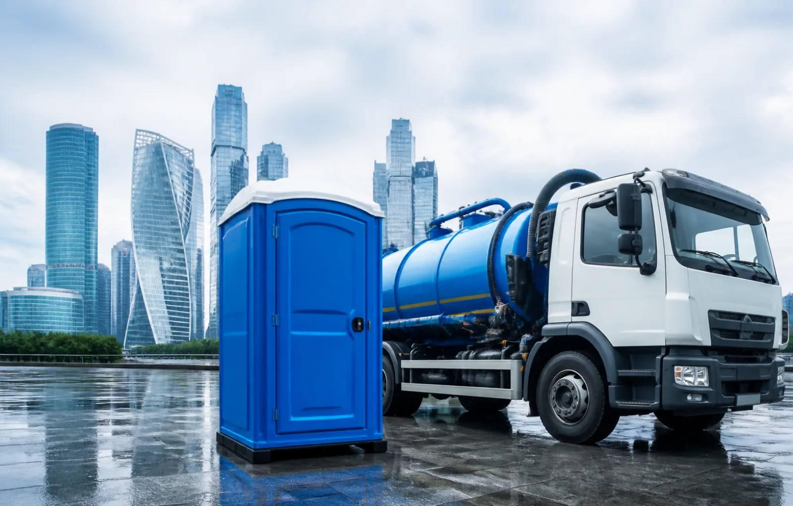
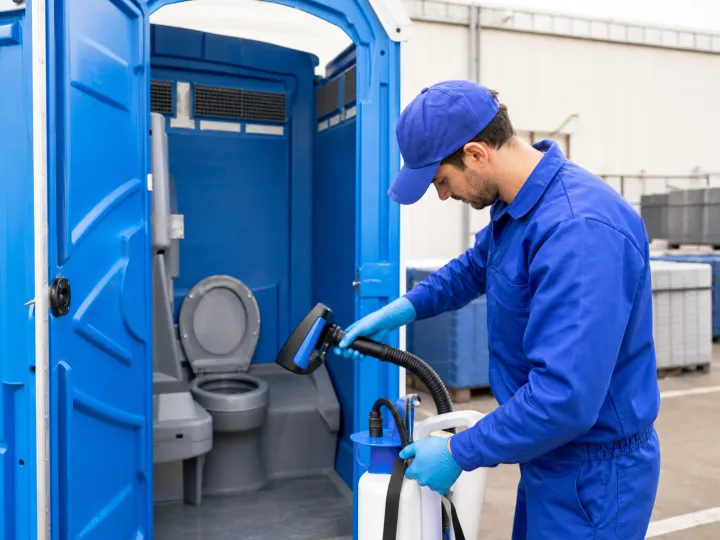
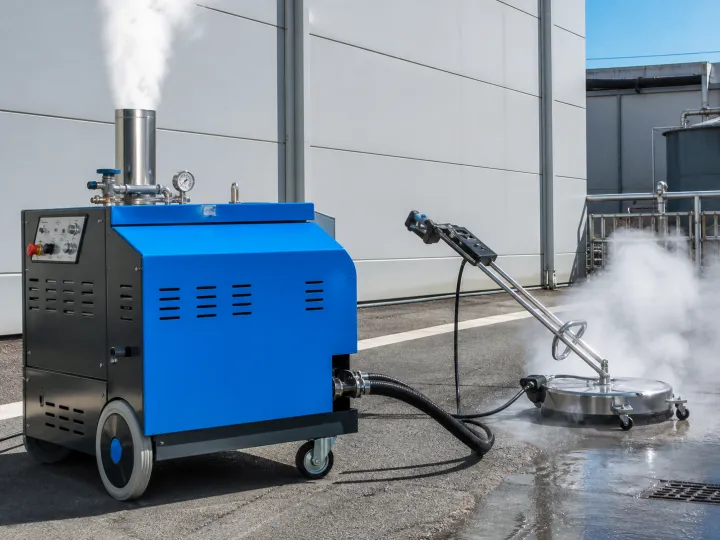
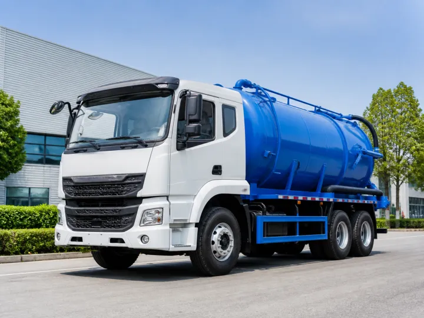
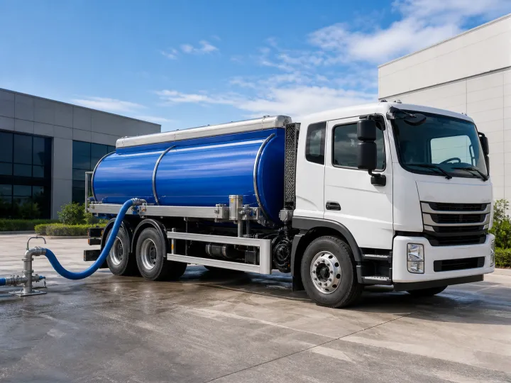
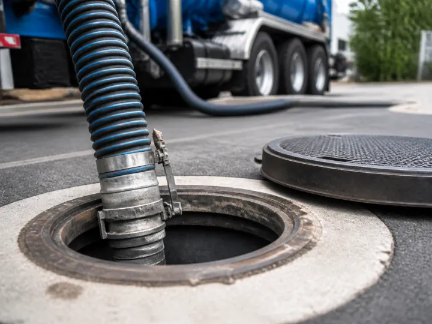
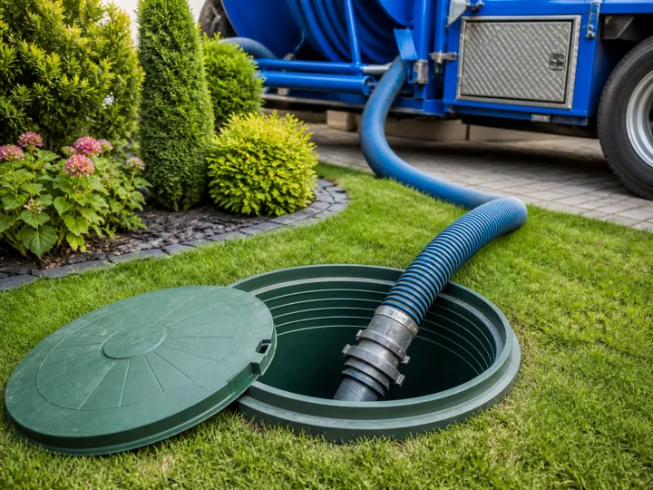
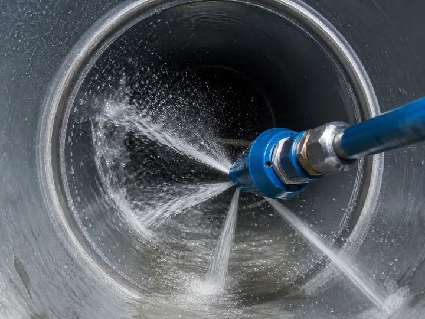

Аренда туалетных кабин
Чистые и комфортные кабины для любых мероприятий и строительных объектов
ПодробнееПредоставляем в аренду и обслуживаем санитарное оборудование, выполняем откачку и чистку канализационных систем. Работаем быстро, чисто и надежно.


Чистые и комфортные кабины для любых мероприятий и строительных объектов
Подробнее
Регулярное обслуживание, чистка и дезинфекция на постоянной основе
Подробнее





Более 10 лет в сфере санитарных услуг. Работаем с объектами любой сложности.
Собственный парк оборудования для выполнения задач быстро и качественно.
Выезд специалистов в день обращения. Работаем без выходных.
Прозрачное ценообразование, без скрытых платежей и переплат.
Вы оставляете заявку удобным способом
Мы уточняем детали и подбираем решение
Оперативно выполняем работы на объекте
Вы получаете чистоту и уверенность
Оставьте заявку, и мы свяжемся с вами в ближайшее время
Получить консультацию